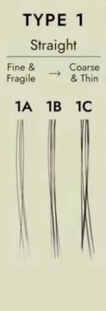
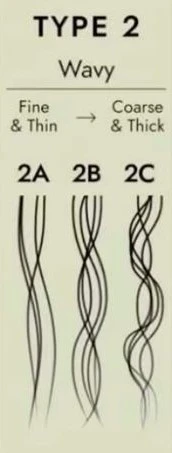
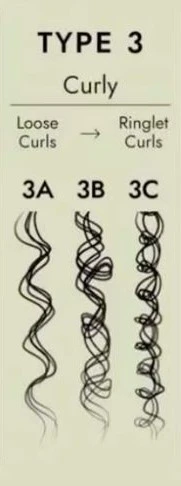
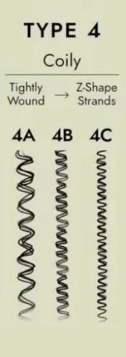
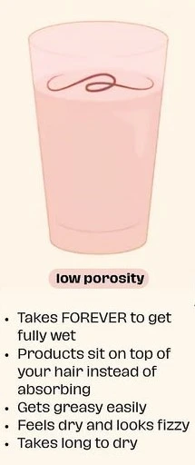
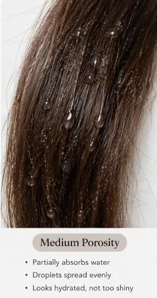
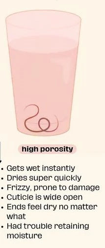
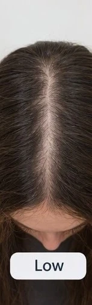
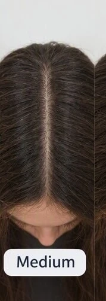
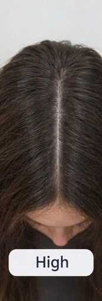

Our hair are considered the crowns that are on top of our heads. So we should do our best to protect and maintain it.
It comes in different curl patterns, porosity, density and even thickness. It is best that you know your hair and which products to use.
Let us know more about each category.
There are several categories our hair fall into.
Hair Types
It classifies hair into four main families based on curl shape, with letters (A, B, C) indicating the width or tightness of the pattern.
Type 1: Straight Hair
1A: Fine, stick-straight hair with no curl or wave; very glossy but struggles to hold a curl.
1B: Straight hair with a medium texture, more body, and slight movement.
1C: Straight, coarse, and thick hair with high volume that holds styles well.

Type 2: Wavy Hair
2A: Fine, piece-y, loose "S" waves that lie close to the head.
2B: Defined "S" waves with a bit more body and frizz (classic beach waves).
2C:: Thicker waves with prominent, deep "S" bends starting closer to the roots.

Type 3: Curly Hair
3A: Loose, big, shiny ringlets.
3B: Springy, well-defined curls ranging from medium ringlets to tight spirals.
3C: Tight corkscrews, coils, or dense ringlets.

Type 4: Coily / Kinky Hair
4A: Soft, dense, well-defined "S"-pattern coils or ringlets.
4B: Tighter coils featuring a sharp "Z"-shaped zigzag pattern rather than a smooth loop.
4C: Extremely tight, dense coils and zigs with maximum shrinkage and little to no natural curl definition when dry.

Hair Porosity
This is your hair's ability to absorb and retain moisture through its outer protective layer, called the cuticle.
There are 3 types of porosities.
Low Porosity
The cuticle scales are tightly bound and overlap closely.
Water and products resist entering and tend to sit on the surface.
Takes a long time to air-dry.
Water beads up on the surface when you spray with clean water on clean hair.
It feels smooth when you slide a single strand of hair between your fingers from the tip down to the root.

Medium Porosity
The cuticle has a balanced, healthy structure.
Absorbs and holds moisture easily.
Holds styles and hair color well.

High Porosity
The cuticle has gaps, cracks, or raised scales (often caused by genetics, heat styling, or bleaching).
Absorbs moisture very quickly, but loses it just as fast, leading to frizz and breakage.
Air-dries very fast.
It instantly absorps when you spray with clean water on clean hair.
It feels rough or bumpy texture when you slide a single strand of hair between your fingers from the tip down to the root.

Click this video below for more explanation
Hair Density
It is the number of individual hair strands on your scalp per square inch or square centimeter.
Low density
Your scalp is easily and widely seen when you part your hair in the middle.

Medium density
Your scalp is somewhat visible when you part your hair in the middle.

High density
Your scalp is barely visible or hidden when you part your hair in the middle.

Click this video below for more explanation
Hair Thickness
It is the width or diameter of an individual hair strand, which typically ranges from 0.03 mm to 0.06 mm for fine or medium hair and up to 0.08 mm to 0.2 mm for coarse or thick hair.
It is different from hair density, which refers to the total number of strands on your scalp.
You can have fine strands with high density, or thick strands with low density.
Fine Hair
Measures about 0.04 to 0.06 mm in diameter.
The strand feels delicate, is hard to feel between your fingers, and is nearly invisible against the light.
Medium Hair
Measures about 0.06 to 0.08 mm in diameter.
It sits right in the middle, is subtly visible, and can be felt lightly between your fingers.
Coarse / Thick Hair
Measures 0.08 mm to 0.12 mm (or up to 0.2 mm) in diameter.
The strand is opaque, thread-like, sturdy, and easily felt when rubbed between your fingers
Key Factors That Influence Hair Thickness
Genetics: Your baseline strand width and growth patterns are primarily inherited.
Hormones & Aging: Changes from testosterone levels, pregnancy, menopause or general aging can alter the hair growth cycle and shrink strand diameter over time.
Nutrition & Health: Deficiencies in iron, zinc, protein, biotin and vitamins (or chronic conditions like thyroid issues) can weaken hair shafts.
Damage & Styling: Excessive heat styling, chemical bleaching and tight traction styles can break and fray strands, making them appear thinner